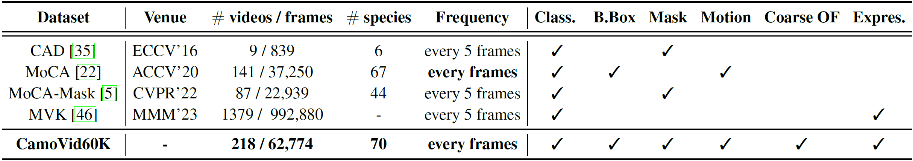

1The Hong Kong University of Science and Technology, Hong Kong SAR
2Ocean University of China, China
3CFAR & IHPC, A*STAR, Singapore
Category distribution and some visual examples (extracted animal masks) of our dataset.
Abstract
In recent years, there has been a growing interest in applying Computer Vision (CV), Artificial Intelligence (AI), and Deep Learning (DL) to the study of animals. However, only a few studies have specifically targeted camouflaged animals. Training DL models is often resource-intensive, requiring large amounts of accurately annotated data. Enhancing data diversity and scale is essential to mitigate algorithmic biases. To address these challenges, we present CamoVid40K, a diverse, large-scale, and accurately annotated video dataset of camouflaged animals. This dataset comprises 149 videos with 44,270 finely annotated frames, covering 69 animal categories. CamoVid40K is designed for various downstream tasks in CV, such as camouflaged animal classification, detection, and task-specific segmentation, etc.
Camouflage is a powerful biological mechanism for avoiding detection and identification. In nature, camouflage tactics are employed to deceive the sensory and cognitive processes of both preys and predators. Wild animals utilize these tactics in various ways, ranging from blending themselves into the surrounding environment to employing disruptive patterns and colouration. Identifying camouflage is pivotal in many wildlife surveillance applications, as it assists in locating hidden individuals for study and protection.
Concealed scene understanding (CSU) is a hot computer vision topic aiming to learn discriminative features that can be used to discern camouflaged target objects from their surroundings. The MoCA dataset is the most extensive compilation of videos featuring camouflaged objects, yet it only provides detection labels. Consequently, researchers often evaluate the efficacy of sophisticated segmentation models by transforming segmentation masks into detection bounding boxes. With the recent advent of MoCA-Mask, there’s been a shift towards video segmentation in concealed scenes. However, despite these advancements, the data annotations remain insufficient in both volume and accuracy for developing a reliable video model capable of effectively handling complex concealed situations. The below table compares our proposed dataset with previous ones, showing that CamoVid40K surpasses all previous datasets in terms of the number of videos/frames and species included.

Comparison with existing video camouflaged animal datasets. Class.: Classification Label, B.Box: Bounding Box, Coarse OF:
Coarse Optical Flow, Expres.: Expression.
Word cloud of category distribution of camouflaged animals.
This work is supported by an internal grant from HKUST (R9429). This work is partially done when Tuan-Anh Vu was a research resident at CFAR & IHPC, A*STAR, Singapore. The website is modified from this template.